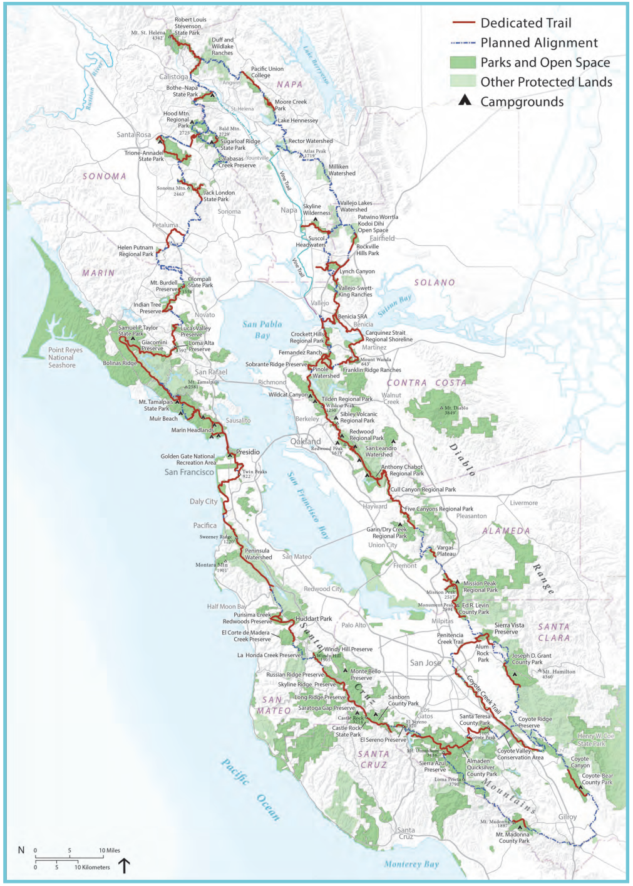

Welcome to the page about my hiking adventures around the San Franscisco Bay area
Namaste! My name is Sonu, and I am thrilled to welcome you to my hiking website. Originally from Nepal, I embarked on a journey that brought me to the beautiful landscapes of the United States in 2017. Since then, I have discovered a deep passion for spending time in nature, embracing its wonders, and challenging myself through hiking adventures. Allow me to share my story and experiences with you. Growing up in Nepal, a country renowned for its breathtaking mountains and rich cultural heritage, I was surrounded by a natural playground. The Himalayas, with their majestic peaks and serene valleys, always beckoned me to explore. As a child, I would often venture into the nearby hills, captivated by the beauty and tranquility of nature. These early encounters with the great outdoors ignited a fire within me, shaping my love for hiking and fostering a sense of wonder for the world around me. When I moved to the United States, I knew that I had the opportunity to delve even deeper into my passion for hiking. The diversity of landscapes and trails that this country offers has been nothing short of extraordinary. From the rugged coastlines of California to the lush forests of the Pacific Northwest and the iconic national parks scattered across the nation, each hike has revealed a new facet of nature's beauty. Hiking, for me, is not just a recreational activity; it is a way of life. It is a means to connect with nature on a profound level, to challenge myself physically and mentally, and to find solace and inspiration in the wilderness. Every step I take on the trail fills me with a sense of accomplishment and brings me closer to self-discovery. Whether it's conquering a steep ascent, crossing a roaring river, or simply sitting atop a mountain peak, each experience has taught me valuable life lessons about perseverance, resilience, and the power of nature. Throughout my hiking journey, I have had the privilege of witnessing awe-inspiring sunrises, marveling at the grandeur of waterfalls, and encountering the diverse wildlife that calls these landscapes home. These experiences have not only deepened my appreciation for the natural world but also sparked within me a desire to share these moments with others. By sharing my adventure and stories, I hope to inspire fellow adventurers to step outside their comfort zones and embrace the wonders of the great outdoors. Beyond the physical aspects of hiking, I find joy in researching trails, planning itineraries, and discovering hidden gems that lie off the beaten path. Through my website, I aim to provide comprehensive guides, personal insights, and practical tips to help fellow hikers embark on their own unforgettable journeys. Whether you're a seasoned hiker or someone just starting to explore the trails, I hope to inspire and empower you to embrace the beauty of nature, push your boundaries, and create lasting memories. Thank you for joining me on this virtual adventure. Together, let's celebrate the magnificence of nature, seek new horizons, and forge unforgettable experiences on the trails. Happy hiking!
The San Francisco Bay Area, with its diverse landscapes and stunning natural beauty, is a haven for outdoor enthusiasts and hiking enthusiasts alike. From towering redwood forests to picturesque coastal trails and rolling hills, this region offers a plethora of hiking opportunities that cater to all skill levels and preferences. One notable gem among the vast array of trails is the Ridge Trail which showcases the diverse offering of the area.
The Ridge Trail is a network of interconnected trails that spans over 550 miles, encircling the entire Bay Area. It offers hikers a chance to explore the region's stunning vistas, diverse ecosystems, and cultural landmarks while providing an immersive outdoor experience. The trail meanders through a variety of terrains, including grasslands, oak woodlands, coastal bluffs, and rocky ridgelines, ensuring that every step along the way offers a unique and captivating experience.
Created in Berkeley with 💖 by Sonu Subedi